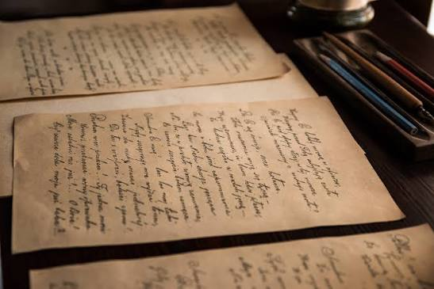
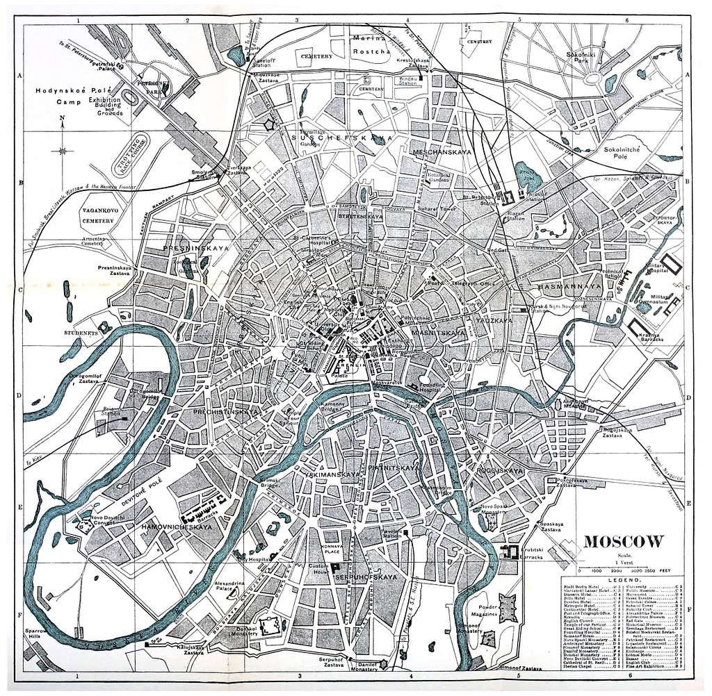
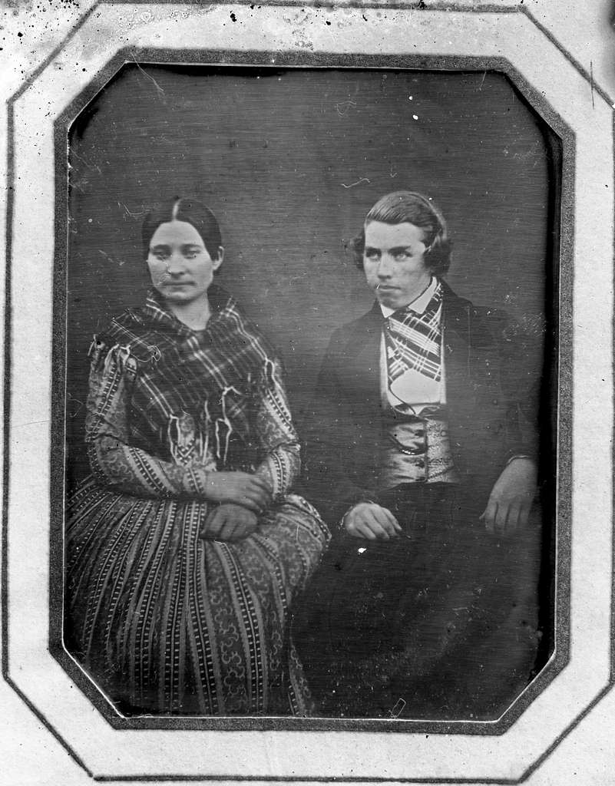
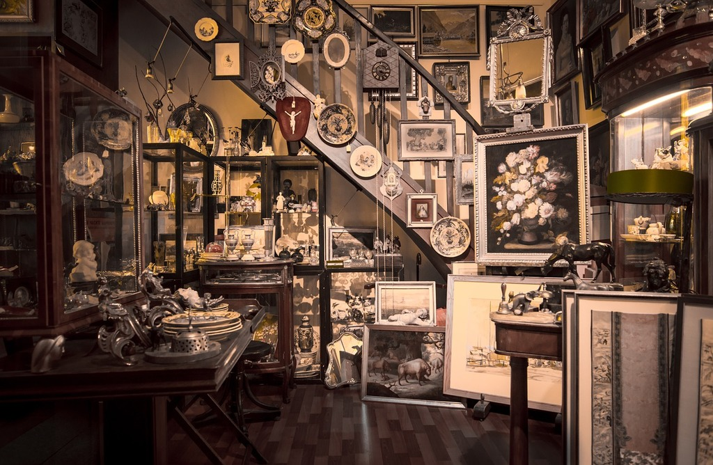

01
Архивные документы
Письма, дневники, городские планы и официальные документы разных исторических периодов.
Постоянная экспозиция
История города, рассказанная через редкие документы, старинные фотографии, карты и предметы повседневной жизни.

Глава II
Экспозиция «Город сквозь время» знакомит посетителей с основными этапами становления и развития города. Представленные материалы показывают, как менялись улицы, общественные здания, транспорт и повседневная жизнь горожан.
Значительную часть коллекции составляют документы из семейных архивов: письма, фотографии, дневники, удостоверения и памятные открытки. Благодаря этим предметам история города раскрывается через судьбы конкретных людей.
История города состоит не только из важных дат, но и из повседневных воспоминаний его жителей.
Из музейного собрания
Экспозиция объединяет подлинные предметы, архивные материалы и художественные произведения.

01
Письма, дневники, городские планы и официальные документы разных исторических периодов.

02
Виды улиц, семейные портреты и снимки важных городских событий прошлого столетия.

03
Посуда, инструменты, одежда и личные вещи, принадлежавшие жителям города.
Краткая хронология
| Период | Событие | Материалы экспозиции |
|---|---|---|
| XVIII век | Основание первого городского поселения | Карты, планы и письменные свидетельства |
| XIX век | Развитие ремёсел и городской торговли | Инструменты, вывески и предметы быта |
| Начало XX века | Строительство новых улиц и общественных зданий | Фотографии, чертежи и городские документы |
| Вторая половина XX века | Расширение города и развитие промышленности | Газеты, плакаты и личные архивы жителей |
Спланируйте посещение
Экспозиция открыта в соответствии с общим режимом работы музея. Адрес и часы посещения указаны на странице контактов.